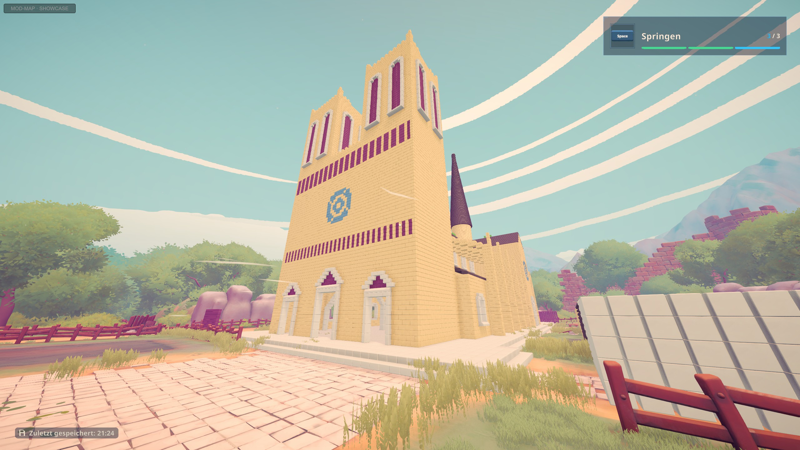
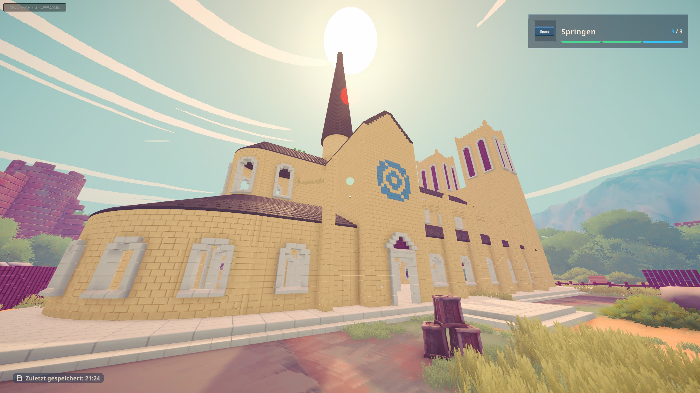
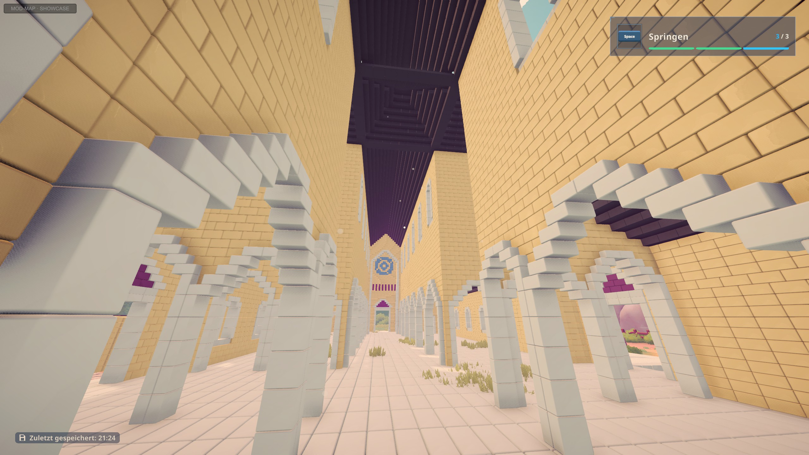
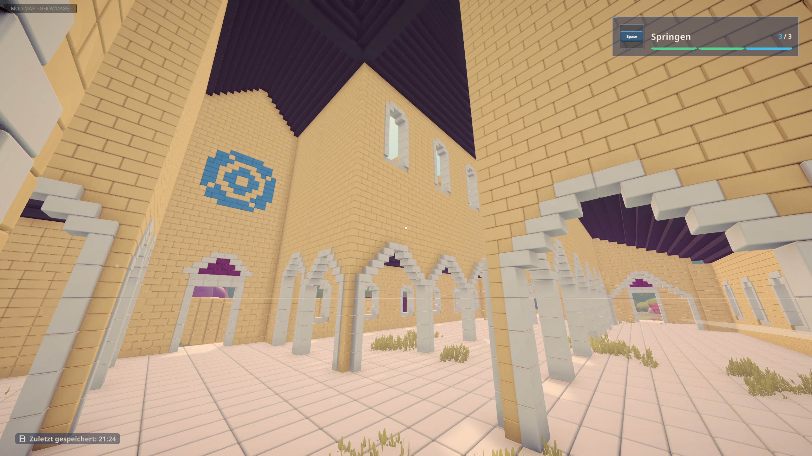

The simplified Notre-Dame of the Extra Buildings mod, standing finished in the town of Brick by Brick: about 26,500 bricks in five construction sites, from the west front with its bell towers to the round choir and the spire over the crossing. Arcades of pointed arches carry the upper walls inside. For these screenshots the mod's showcase mode places the whole building at once; in a normal game every brick is placed by hand, section by section, with a walkable scaffold up to the spire.




Unofficial fan mod, not made by the game's developers. Screenshots from a test world (game interface in German).